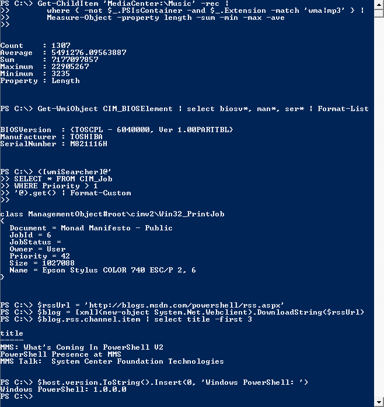

SNU programming/PowerShell IDE collection
PowerShell IDE selection
Select a Microsoft PowerShell IDE
Documentation
Wikipedia (as of September 7th 2019)
PowerShell Wiki - September 7th 2019 edit.pdf
Older
PowerShell Wiki - September 7th 2019 edit.pdf
PowerShell 1.0

Compatibility
PowerShell 2.0

Compatibility
PowerShell 3.0
Documentation not found
Compatibility
PowerShell 4.0
Documentation not found
Compatibility

PowerShell 5.0
Documentation not found
Compatibility
PowerShell 5.1
Documentation not found

PowerShell Core 6.0

Documentation messing
PowerShell Core 6.1
Documentation not found
PowerShell Core 6.2
Documentation not found
PowerShell 7
Documentation missing
Test programs by SNU
Unofficial PowerShell documentation
PowerShell file types
.ps1 (Script)
.ps1xml (XML Document)
.psc1 (Console File)
.psd1 (Data File)
.psm1 (Script Module)
.pssc (Session Configuration File)
.cdxml (Cmdlet Definition XML Document)
PowerShell comments
Syntax
Single line comments (Version 1 and up):
# This is a comment
Multi-line comments (Version 2 and up)
<# This is the start of a multi-line comment
You can make it as long as you want
This comment ends here #>
-
View older versions of this page
Snapshots 1 to 10
Snapshot 1
Snapshot 2
Snapshot 3
Snapshot 4
Snapshot 5
Snapshot 6
Snapshot 7
Snapshot 8
Snapshot 9
Snapshot 10
Snapshots 11 to 20
Snapshot 11
Snapshot 12
Snapshot 13
Snapshot 14
Snapshot 15
Snapshot 16
Snapshot 17
Snapshot 18
Snapshot 19
Snapshot 20
You have reached the bottom of this page.